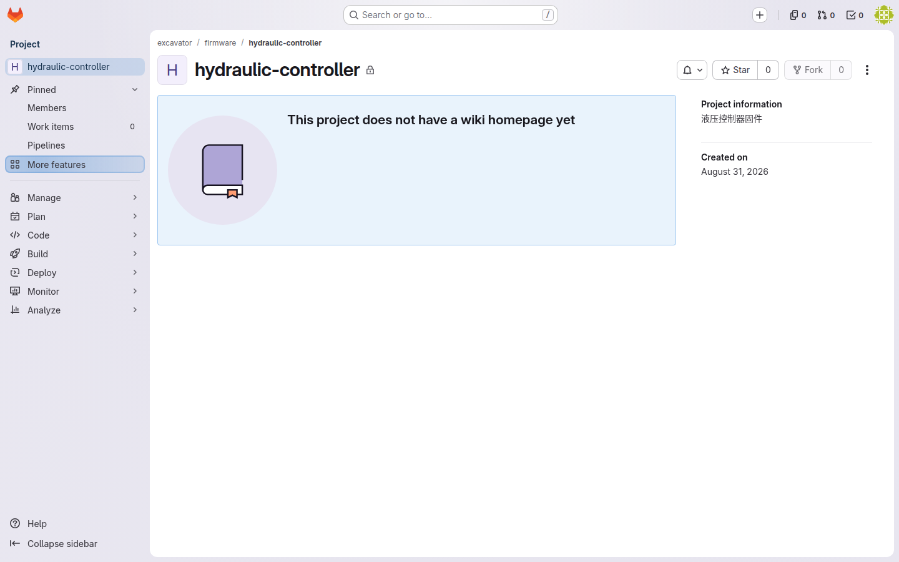
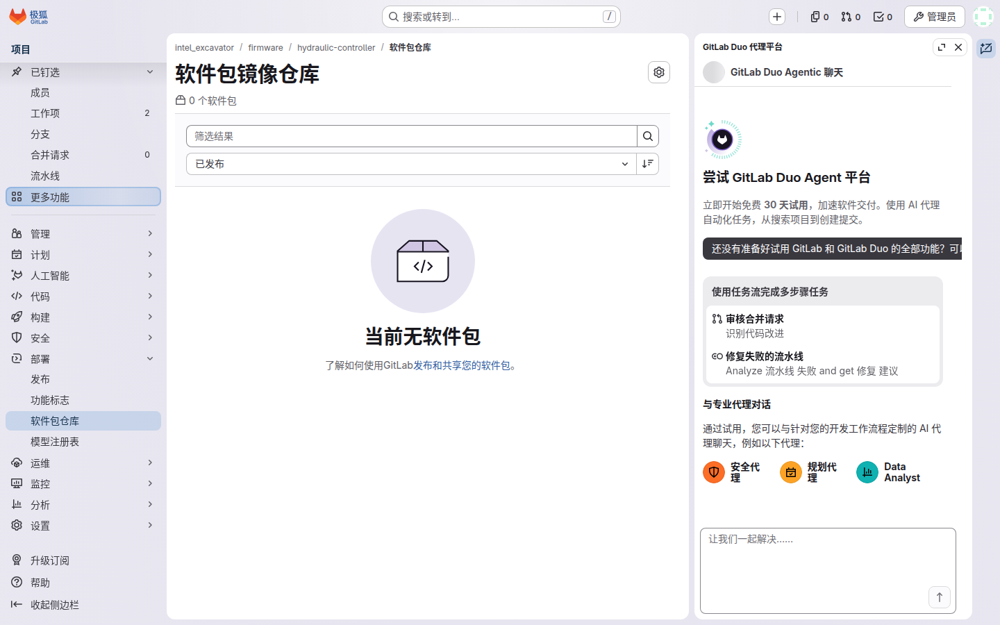

你是谁
你是这个项目的只读协作者，在 GitLab 里的角色是 Guest（10）：需要看项目状态、下载制品，但不动代码（跨组查阅 / 外部协作 / 测试同事）。你不用提 MR、不用碰分支——想知道"项目进展到哪了、最新一版固件是什么"，进来看一眼、下载一份带身份证的制品就走。
你能做什么 / 不能做什么
| 能 ✅ | 不能（会收到 403/拒绝）❌ |
|---|---|
| 看项目页、issue、Release、流水线状态 | git clone（403 not allowed to download code） |
| 从 Release 下载 .bin 和 manifest.json | 看代码文件树、MR 列表（无入口/404） |
🔍 为什么到处都是 403？
看到 403 不是系统坏了，是权限边界在正常工作（§4.3）——需要看代码时找仓库 Owner 加 Reporter，而不是想办法绕。
🔍 镜像和模型在哪？（二阶段新增，§6.4）
容器镜像存 Harbor、模型权重存 MinIO，不挂在 Release 里——这两类要单独授权，找平台组开。你（Guest）的 Release 下载通道不变，仍只下 .bin 与 manifest。
典型任务流：取一份制品并核对它
1
项目主页（Guest 视角）｜ 无代码文件树，点 Code 看不到代码入口，clone 会 403——这正是权限边界
找项目
登录后从 Groups 进入对应项目组，点开要查的仓库。没有代码权时，项目页对你仍然开放。

2

Release 页 ｜ Assets 里下载 .bin 与 manifest.json
进 Releases 下载制品
左侧 Deploy → Releases，找到目标版本，在 Assets 里下载 .bin 与 manifest.json——两个都要下，manifest 就是这份包的身份证。
3
核对 manifest
打开 manifest.json 看 name / commit / build_time / runner 四个字段——"手上这个包是哪个版本、什么时候构建"一查即知。
🔍 为什么下完先看 manifest？
现场刷错版本是最高频的事故来源（§6.3）——花 30 秒核对四个字段，你就知道自己手上拿的到底是哪个 commit、什么时候、在哪台机构建的。
4
包仓库 ｜ Deploy → Package Registry
（如需通用包）Package registry
要的不是固件包，而是通用依赖包时，走左侧 Deploy → Package Registry。

常见报错自救
💡 clone 被拒
确认你要的是代码还是制品——制品走 Release 就够：
$ git clone http://gitlab.internal/excavator/firmware/hydraulic-controller.git
remote: You are not allowed to download code from this project.
fatal: The requested URL returned error: 403
这是 Guest 的正常预期，不是故障。
💡 Release 页没有附件
找 Owner 确认该版本是否已发布——未晋升的 tag 没有 Release（§6.3），只有 build 绿了且有人手动批准晋升后，附件才会出现。
红线清单
🚫 制品与 manifest 只在自己权限范围内使用
你被授权下载，不等于可以转发——把 .bin 与 manifest.json 转给未授权人员，等于替对方绕过了权限边界（§4.3）。
延伸阅读
设计文档（docs/superpowers/specs/2026-08-31-excavator-code-management-design.md）：
- §4.3 权限
- §6.3 制品晋升与追溯
- §6.4 制品与镜像存储分工（镜像/模型归宿）
原型验收（docs/superpowers/specs/2026-08-31-excavator-prototype-test-plan.md）：
- §7.2 逐角色模拟验收——驻场工程师取制品走的就是你这条同款通道
- §8 第二阶段验证结果（Harbor/MinIO 接入）